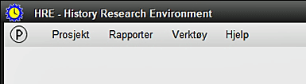
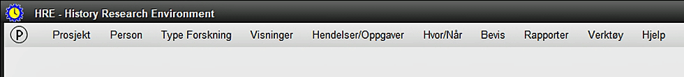

Hovedmenyen vises når HRE starter og består i utgangspunktet av bare noen få elementer:

Hvis du har valgt å åpne det sist viste prosjektet, åpnes dette i stedet med full menylinje i visningen.
Alle de viste menyelementene er i det minste delvis funksjonelle på dette stadiet av HRE-utførelse.
For å se hele menyen, må et prosjekt åpnes, og da endres menyen til:

Du kan også velge å importere et TMG-prosjekt til HRE eller utføre en rekke andre alternativer, som oppført i de Relaterte Temaer nedenfor:
Relaterte Temaer